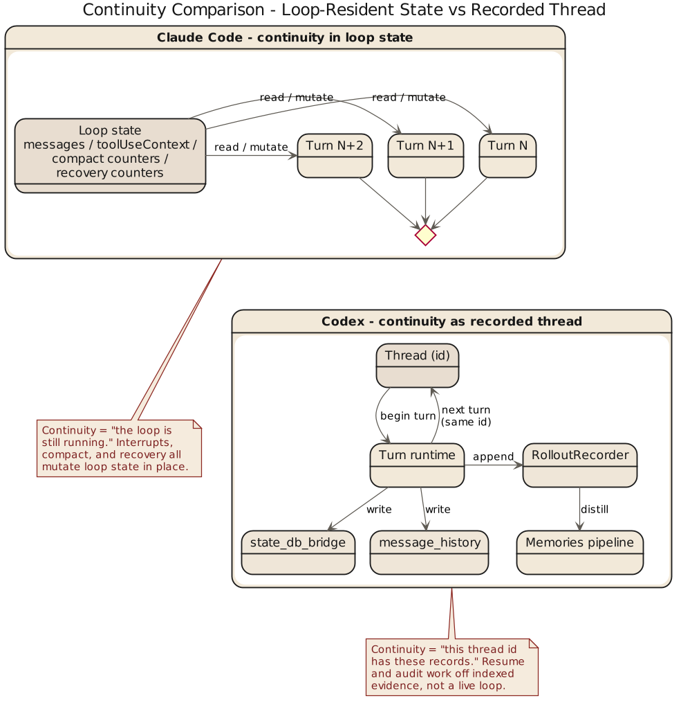
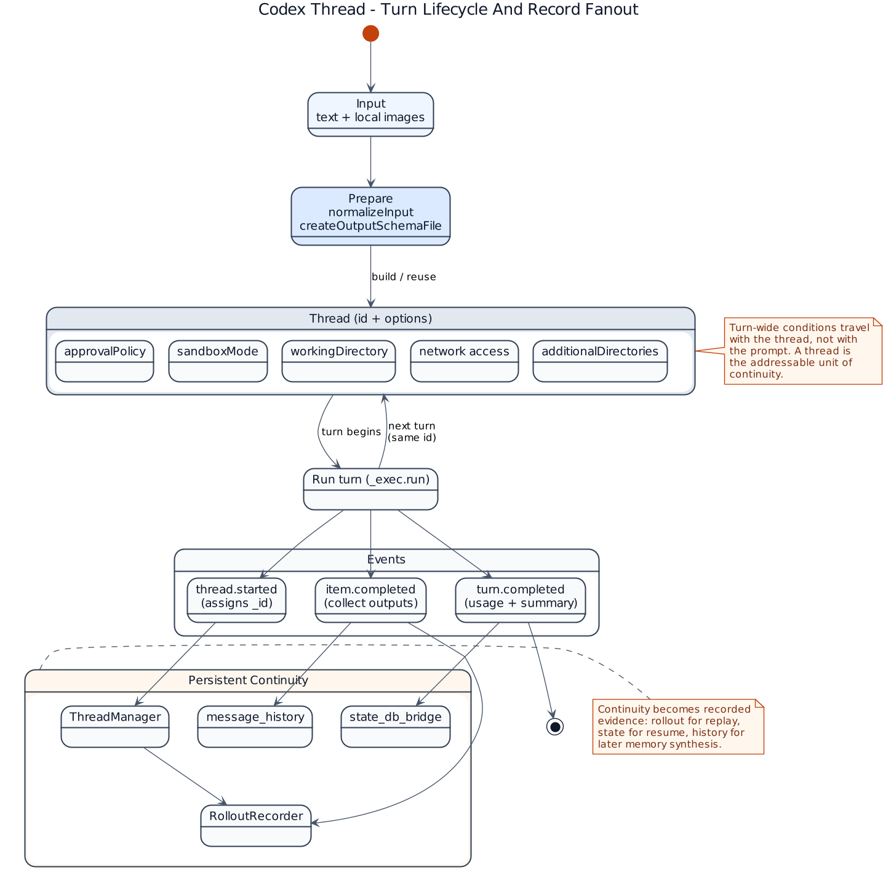

第 3 章 心跳放在哪：Query Loop 对照 Thread、Rollout 与 State

3.1 代理系统的核心是连续性
把代理系统当成“多轮聊天”，就像把数据库当成“一个比较耐心的记事本”——掩盖了真正的架构难题。代理系统真正难的是连续性：上一轮做了什么这一轮怎么接、工具结果怎么回填、中断后怎么收口、上下文过长怎么整理、失败时要重试还是忠实汇报。这些问题决定系统是不是 agent，而不只是某个”支持工具调用的问答接口”。Claude Code 与 Codex 在这里的差异，比任何功能对照都更有含金量。
3.2 Claude Code：把连续性压进主循环
Claude Code 的主轴就在 query() 和 queryLoop() 一带。它把很多关键问题都压进循环状态里：当前消息序列、tool use context、compact 跟踪、output token 恢复计数、pending summary、turn count、transition。也就是说，对"代理如何活着"的回答是运行时性的——连续性主要由 loop 维护，系统骨架是一个不断自我校正的会话发动机，而非先有强外部状态模型再驱动执行的体系。优势很现实：工具返回顺序、输出截断、prompt too long、history snip、microcompact、用户插话，这些真实麻烦都发生在 loop 里。它不回避这些问题，而把它们当作 loop 内部的合法状态。设计有工程的粗粝感——不优雅但通常更稳。
3.3 Codex：把连续性拆成线程、rollout 与状态桥
Codex 更"账本化"。core/src/lib.rs 里连续性被分摊到 codex_thread、thread_manager、rollout、state_db_bridge、state、message_history。

sdk/typescript/src/thread.ts 里 thread 已经是外部开发者可直接操作的一级概念：Thread 持 id，可 runStreamed() 或 run()，thread.started 回填线程 ID；approval policy、working directory、sandbox mode、network access、additional directories 等 turn 级条件都是紧耦合显式参数。"线程主权"很具体——runStreamedInternal() 先做 normalizeInput() 分离文本和图像，调 createOutputSchemaFile() 备 schema，再把 threadId、approvalPolicy、sandboxMode、workingDirectory、networkAccessEnabled、additionalDirectories 一并送进 _exec.run()。收到 thread.started 事件，对象即更新 _id。thread 不是外围包装，是 turn 级执行语义真正经过的一层。连续性不再只是"循环还在继续"，而是"一个线程被一套显式状态结构持续记录和约束"。rollout 的存在尤其说明 Codex 在乎回放、索引、持久化和会话外可见性——系统因此更接近执行记录器，而非现场对话管理器。
3.4 差别在于状态安放的位置
Claude Code 当然有状态，Codex 当然有循环——差异不在有没有，而在主权在哪。Claude Code 把状态主权更多交给 query loop：系统认为"会话怎么继续"是 runtime 核心问题，许多事情要在 loop 里直接解决。Codex 把状态主权更明确地交给 thread 和 rollout 结构：连续性不该是内部控制流的副产物，而是被线程和状态基础设施承接的显式事实。因此 Thread 在 TypeScript SDK 里已是产品概念，开发者直接围绕它思考 agent turn；Claude Code 的 query loop 则更像发动机室，重要但不一定是用户心智模型的中心。
不变式：连续性主权 (invariants)
// Claude Code (源: src/query.ts)
assert loop owns {messages, toolUseContext, compactTracking, turnCount}
assert every loop iteration recomputes "what matters now"
assert pending tool_use 在同一 loop iteration 内必须被闭合或 synthetic 兜底
// Codex (源: core/src/lib.rs, sdk/typescript/src/thread.ts)
assert thread.id is stable across runs; rollout records every turn
assert turn-level {approvalPolicy, sandboxMode, workingDirectory} 在 exec.run() 入参中显式
assert thread.started 事件先于任何工具调用 emitted
assert state_db_bridge 持久化早于主循环退出中断与 pending tool_use 的故障矩阵
| 事件顺序 | 前置状态 | 触发 | Claude Code 下一步 | Codex 下一步 |
|---|---|---|---|---|
| 用户中断 + 工具在飞 | tool_use 未闭合 | 用户 abort | 在 loop 内 synthesize tool_result，闭账 | 线程层 abort，写 rollout interrupted 事件 |
| 模型输出被截断 | max_output_tokens | 上限触发 | 提升 cap 或追加 meta user msg 续写 | 线程记录 truncation，由 caller 重启 turn |
| prompt too long | 会话过胀 | prompt_too_long |
loop 内 collapse / reactive compact / surface | 由 thread_manager 裁剪 history 再下一轮 |
| 进程重启 | 会话中途崩溃 | crash / kill | 依赖外部 PR / Git 重建，loop 状态易丢 | rollout + state_db_bridge 可按 thread.id 重放 |
| 恢复失败 | 连续 compact 失败 | 熔断阈值 | 跳过 stop hook，faithful 报错 | 返回 state bridge 错误，保留 thread 记录 |
3.5 对恢复与可审计性的影响
状态安放差异直接影响恢复和审计。Claude Code 的恢复强项在离现场近——很多问题就在 loop 内部被发现和修复（reactive compact、token 上限恢复、工具中断处理），不需要先搬运到更高一层状态模型里再考虑怎么回滚。Codex 的恢复强项体现在状态可追踪性——线程有 ID，rollout 有记录，state bridge 和 message history 提供更清楚的外部结构，系统更容易回答"上一轮到底发生了什么"。core/src/lib.rs 的"档案意识"更明显：不只暴露 CodexThread，还显式导出 ThreadManager、RolloutRecorder、state_db_bridge 和 message_history——一个系统把这些器官放到根模块出口附近，等于承认连续性不是 loop 的副产品而是基础设施本身。简言之：Claude Code 像现场救火队，Codex 像带档案系统的调度中心；前者擅长维持运行，后者擅长说清楚运行是如何被维持的。
3.6 对产品和团队接口的影响
主权在 loop，团队沿运行时问题组织工作：哪些错误需要恢复、哪些动作应当中断、compact 何时触发、工具结果如何串回主对话。主权在线程和状态结构，团队沿接口与治理组织工作：thread 的生命周期、rollout 保留哪些事件、状态库放哪、approval policy 如何成为 turn 级选项。因此 Claude Code 更像先把 agent 做会再嵌制度，Codex 更像先立制度接口再让 agent 在里面工作。
3.7 本章结论
这一章的结论可以写得明确一点：
Claude Code 的连续性更多由 query loop 承担，Codex 的连续性更多由 thread、rollout 与 state 基础设施承担。
前者强调 runtime heartbeat。
后者强调 persisted session substrate。
这不是审美差异，这是系统权力分配。谁来拥有连续性，谁就定义了 harness 的中心。
下一章进入最硬的一层：工具、沙箱、审批和执行策略。到了这里，浪漫叙事一般都会自动退场，因为 shell 不大关心文风。